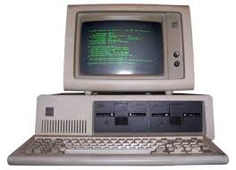
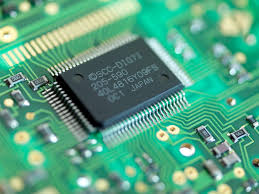

|
Third-Generation Computers (approximately 1964–1970)
The replacement of the transistor with integrated circuits (ICs) marked the beginning of
the third generation of computers. Integrated circuits incorporate many transistors and
electronic circuits on a single tiny silicon chip, allowing third-generation computers to be
even smaller and more reliable than computers in the earlier computer generations. Instead
of punch cards and paper printouts, keyboards and monitors were introduced for input and
output; hard drives were typically used for storage. An example of a widely used third
generation computer is shown in the figure. |
 |
|
INTEGERATED CIRCUIT:
An integrated circuit (IC), also known as a microchip or simply chip, is a small electronic device made up of multiple interconnected electronic components such as transistors, resistors, and capacitors. |
 |